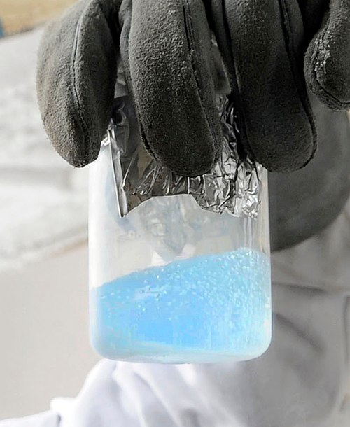

Color: Colorless gas; pale blue in liquid/solid form
Melting Point: −218.79 °C
Boiling Point: −182.96 °C

Discovery
Oxygen was independently discovered by Carl Wilhelm Scheele in the early 1770s and Joseph Priestley in 1774.
Antoine Lavoisier later named and characterized the element in 1777 :contentReference[oaicite:2]{index=2}.
Abundance & Sources
Oxygen is the third most abundant element in the universe and makes up almost half of Earth's crust by mass,
largely as oxides like silicon dioxide. It also represents about 21% of Earth's atmosphere by volume
:contentReference[oaicite:3]{index=3}.
Allotropes
Dioxygen (O₂) – the common form we breathe
Ozone (O₃) – a reactive form that protects from UV radiation but is toxic at ground level
Other rare allotropes: atomic oxygen (O₁), singlet oxygen, tetraoxygen (O₄), and various phases of solid
oxygen :contentReference[oaicite:4]{index=4}.
Uses
Essential for respiration in living organisms and metabolic processes
Steel and metal production (oxy‑fuel welding and cutting)
Medical use in oxygen therapy and life‑support systems
Rocket propellant when combined with hydrogen
Liquid oxygen is used in cryogenics and rocketry due to its paramagnetic behavior
:contentReference[oaicite:5]{index=5}.
Interesting Facts
Oxygen is vital for life and is a key component of DNA, proteins, and sugars
:contentReference[oaicite:6]{index=6}
Liquid oxygen is pale blue and strongly paramagnetic—it can be suspended in a magnet’s field
:contentReference[oaicite:7]{index=7}
Auroras are caused by excited oxygen atoms emitting green and red light
:contentReference[oaicite:8]{index=8}
Excess oxygen exposure can cause toxicity, especially under pressure environments such as diving—known
as oxygen toxicity or convulsions :contentReference[oaicite:9]{index=9}
Did You Know?
Lightning naturally fixes atmospheric nitrogen into reactive forms—but it also produces highly reactive
oxygen radicals used in ozone formation and natural chemistry cycles
:contentReference[oaicite:10]{index=10}.